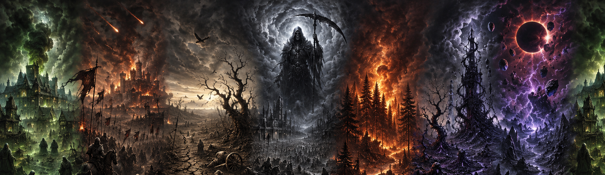
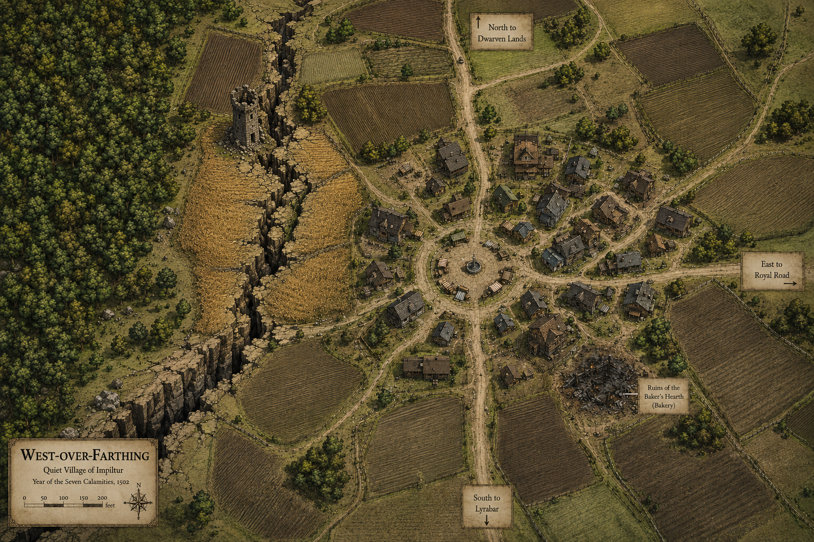

West-Over-Farthing is a quiet farming village nestled in the rolling fields of Impiltur, where winding dirt roads converge upon a circular market square surrounded by sturdy timber homes, modest workshops, and weathered trade stalls. To the west, the dark edge of the forest presses close against the village lands, while broad spring-planted fields stretch eastward beneath scattered copses of trees. The drought and famine of 1497 DR drove many inhabitants away to seek life elsewhere, but West-over-Farthing had slowly been rebuilding; unfortunately, the earthquake on Hammer the 17th, 1502 DR carved a deep chasm through the western farmlands and the tall wheat field near the old watchtower, leaving many villagers uneasy as aftershocks still occasionally rattle shutters in the night. Many fear additional calamities. Though life somehow continues with stubborn resilience, scars of the older tragedies remain as well—most notably the blackened ruins of Andrissa’s bakery on the southeastern edge of town, which burned in 1497 DR under unfortunate circumstances that locals still speak of in lowered voices around evening hearthfires.